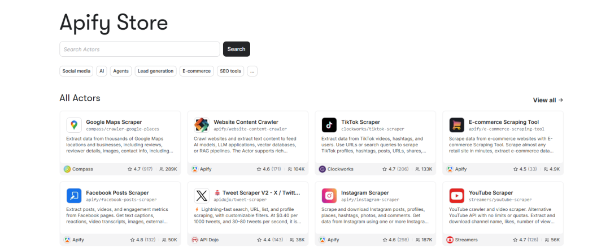

大家好，我是你们的AI工具猎手夹克。
最近又刷到一个宝藏知识，@svpino（那个教硬核AI/ML的计算机科学家）发了一个7分13秒的实战视频，直接把AI的信息获取能力拉到新高度：给你的AI代理（尤其是Claude Code）装上“互联网实时眼睛”，让它能从全世界任意网站抓取结构化数据，再用LLM智能分析，彻底告别幻觉，信息边界直接被炸穿。
我把视频核心 + 落地步骤 + 分析和使用建议，整理成这篇干货。看完就能上手，真正把AI从“会聊天”变成“会干活”的生产力工具。
普通AI的网页能力，为什么是伪命题？
我们平时让Claude/GPT“帮我查查XX网站最新数据”，它要么：
• 靠搜索引擎拼概率（结果不全、过时） • 硬啃原始HTML（规模一大就幻觉连篇，你根本校验不了）
svpino在视频里直言：“At 10 pages, you won’t notice. At 100 pages, your agent will start making decisions based on data that’s wrong in ways you can’t even detect.”（10页的时候，你不会注意到。到了100页，你的Agent就会开始根据那些你甚至都无法察觉其错误之处的数据来做决定了。）
根源就在于使用架构错了：把“确定性抓取”和“智能分析”全扔给LLM。而正确做法只有一条：职责彻底分离。
Apify + Claude Code：工业级确定性抓取 + LLM智能分析的完美结合
Apify做了20年网页抓取，积累了海量稳定Actor（服务器less云程序）。它只负责一件事：用确定性工具读取网页、结构化提取数据。
LLM只负责：分析、决策、输出洞见。
两者通过Apify Agent Skills无缝集成到Claude Code（或Cursor）里，一行自然语言指令就能跑通全流程。
视频里svpino的真实演示超级直观：
1. 在Claude Code/Cursor里自然语言说：“帮我抓取旧金山AI初创公司的Google Maps数据” 2. AI自动调用Apify的Google Places Actor，输出结构化CSV（公司名、网站、地址、评分等） 3. 再一句：“从这些网站里提取邮箱地址” 4. AI继续调用Contact Info Scraper，遍历所有网站，自动抓email，追加到CSV里
整个过程在IDE里完成，不用切到Apify控制台，不用手动写爬虫，数据真实、可验证。
关键命令和步骤（直接复制就能用）：
1. 安装Agent Skills npm install -g apify-agent-skills安装时全选12个技能（lead generation、competitor analysis、ecommerce、ultimate scraper等）。
2. 获取Apify API Token
去 https://console.apify.com/account/integrations 创建免费账号，复制token。3. 项目里创建.env文件 APIFY_TOKEN=你的token4. 在Claude Code里直接用自然语言 • “list all the agent skills you have access to” → 列出所有技能 • “run lead generation skill for AI startups in San Francisco” → 执行抓取 • “extract emails from the previous results” → 链式提取
结果自动保存为CSV/JSON，Apify控制台还能实时监控消耗（免费额度够玩很久，付费也超便宜，按结果计费）。
为什么这个方案能让AI实用性提升10倍？
1. 零幻觉：数据来自Apify真实HTTP请求和20年积累的解析规则，不是LLM“编”的。 2. 无限边界：支持Google Maps、YouTube、Instagram、TikTok、Amazon、Booking等上千平台，任意网站都能自定义Actor。 3. 链式自动化：抓取 → 清洗 → 分析 → 生成报告，全程AI自主完成。 4. 低门槛：一行命令集成，免费额度上手，适合个人/小团队。 5. 可扩展：不仅抓数据，还能开发自己的Actor（视频里提到actor-development skill），把任意工具包装成AI可调用技能。
这本质上是把AI从“概率搜索时代”推向“结构化知识管道时代”。信息不再是碎片化的网页，而是你私人情报引擎的结构化输入。

实战使用建议（直接抄作业）
场景1：市场研究/竞品分析（很多人每天在用了）
指令示例：“用lead generation skill抓取‘AI Agent工具’赛道最近30天融资的初创公司，再提取创始人LinkedIn和邮箱，生成竞品矩阵”
→ 半小时出完整报告，比手动Google快10倍。
场景2：内容创作/趋势追踪
“用ultimate scraper抓取过去7天TikTok上#AIAgent话题的Top10视频，转录文本，做情绪分析和热点总结”
→ 直接喂给Claude生成爆款短视频脚本。
场景3：个人/商业情报引擎
建一个Claude Code项目，每天定时跑：“监控我关注的10个竞品官网价格变动 + 新闻”
→ 变成你的专属商业哨兵。
进阶Tips：
• 先用免费额度玩熟Google Maps和Ultimate Scraper两个技能。 • 想自己开发Actor？用apify-actor-development skill，让Claude帮你写代码。 • 注意合规：只抓公开数据，商业用途注意平台条款。 • 搭配Claude Projects或Cursor Rules，技能调用更稳定。
最后想说
svpino这套方案，真正把AI Agent从玩具变成了武器。以前我们抱怨AI“知道的很多但干不了实事”，现在有了确定性数据管道，实事它真能干，而且干得又快又准。
我已经把Apify Agent Skills集成到自己的日常工作流里，信息获取效率肉眼可见地起飞。你呢？准备好给你的Claude Code装上“全网眼睛”了吗？
1. 现在就去Apify官网注册拿token 2. 按上面步骤装好skills
欢迎转发给正在卷AI Agent的伙伴，一起把信息边界炸得更开！关注我，每天更新AI Agent最新实战、工具拆解、认知重构。
我们下篇见，硅基为刀，修碳基之身，一起卷出新高度！🚀
（视频原地址：@svpino的X帖子，建议爬-墙直接看7分钟原版，视觉冲击更强。https://x.com/svpino/status/2027416057934450816 ）